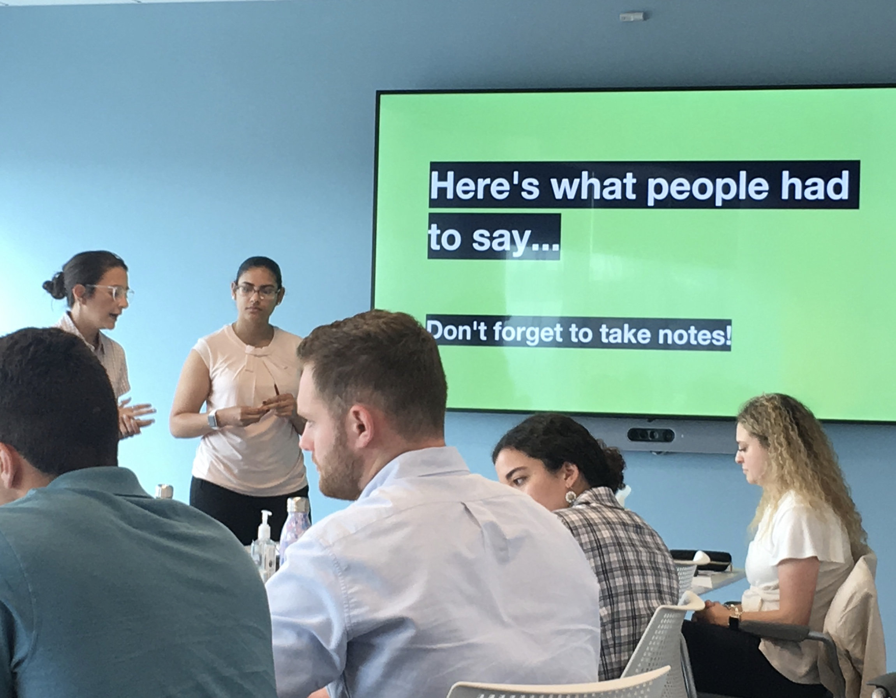
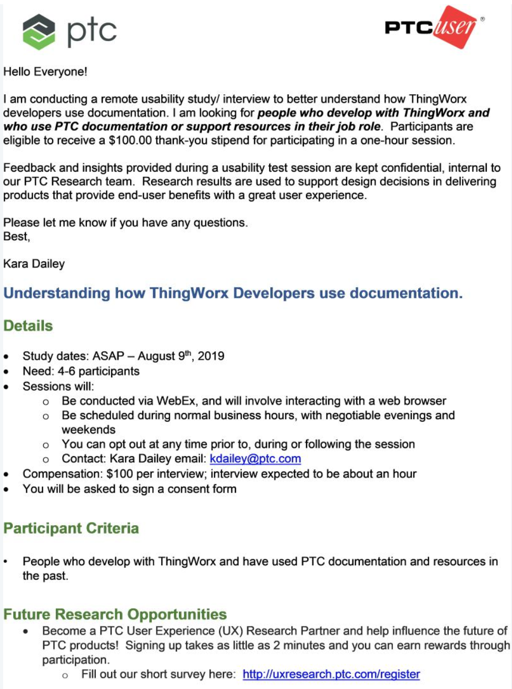

OVERVIEW
Cross-functionally planning head to toe UX efforts from User research, comparitive analysis, heuristic analysis and user testing. I also hosted a very fun design thinking workshop for 20+ employees!
MY ROLE
Design Research Intern
Design Assistant
TEAM
Bill Cole, Director of Research and Academy
Leisa Wert, Sr Director Design Strategy
Kim Moroni, Director of User Research
TIMELINE
May 2019 - September 2019
Although I consider myself a designer, I chose to intern as a design researcher at PTC because I believe design and research are not mutually exclusive, but are actually better together. I wanted to grow as a thoughtful and motivated researcher in order to become a more informed designer come graduation in Spring 2020.
I was lucky to be able to work within PTC’s central product design team where I worked on several in-progress design and research projects as well as saw a few to completion. Because of my NDA, I won’t go into any details, but instead discuss methods I used and reflect on my personal growth.
Within my first week, I was co-creating an exploratory qualitative research study focusing on PTC's ThingWorx IOT Platform for the UX lab at the LIVEWORX digital transformation conference. The UX lab offers 30 different research sessions to conference goers over the course of 3 days, totaling in over 300 hours of interviews and studies with expert users. This was truly the best onboarding experience of my life.
I was able to talk to project managers, researchers and designers in order to get a better grasp on the many number of product lines at PTC and figure out what group I wanted to work with on my next study.
June started out strong with my efforts coming to fruition at the LiveWorx conference. I personally completed 14 hours of exploratory interviews over the course of 3 days and talked to over 20 users! After spending lots of time reviewing recordings and notes, I analyzed my results and presented my first two solo research readouts. I decided to present my findings to two different audiences, my original stakeholders and an additional product team that was affected by the findings. I learned how to approach presenting research in a way that was actionable even when the findings weren't necessarily positive.
These two readouts allowed me to produce a research presentation template for the product design team as well as spur conversations and further research opportunities from both of the teams I presented to. One of these opportunities took shape in the form of a major software release survey. The other spurred a user test/interview study with cross collaboration between myself, stakeholders and the PM team.

By July I had worked with my stakeholders to build the surveys and user tests. I remained pretty clueless about recruiting people to participate in studies. I learned SO MUCH about study recruitment over the second half of my summer and set out on my own personal research study to understand how product teams at PTC test and find their target users.
I fell down a rabbit hole and into a group called PTC/USER. This group is an independant, not for profit group that is organized by volunteers from companies who build with PTC products. They support, educate and advocate for the creators of PTC softwares. This group was essentially untapped by the research team prior to my study which was looking for very specific users. I built a connection with the president of the group who sent my study information out to the larger body, that you can see here or below.
The response I received was overwhelming and ultimately I had to turn participants away. I am so happy that I was able to help build a connection that was a mutually beneficial one where the PTC User group would be able to voice their concerns and input on products while the research team would simultaneously gain access to their expertise.

August was a month of wrapping up of data analysis and presentation of my findings to stakeholders. In light of that, I participated in the Intern Blog series with a post called, 3 UX Tips for a Powerful Presentation. In my final few weeks, I signed, sealed and delivered findings from 2 separate surveys, a user test, an interview as well as an internal comparative analysis.
I had amazing mentors throughout my summer internship and particularly admirable female role models who were willing to push me and offer guidance along my journey in navigating research and design at PTC. Not only did I leave my internship experience understanding how UX Design and Research work within a large scale enterprise software company but with more confidence as a practiced and informed researcher.
If you’re interested in learning more about my summer at PTC, I would love the opportunity to discuss.